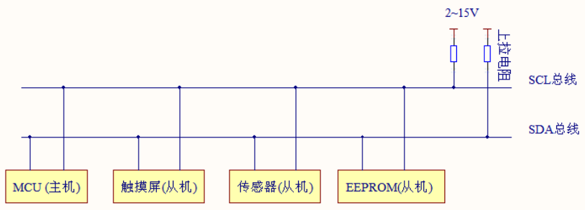
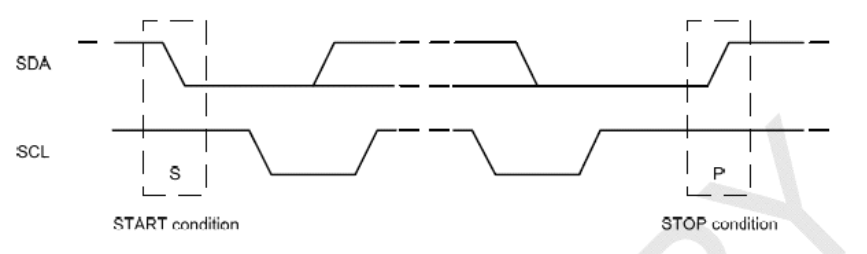
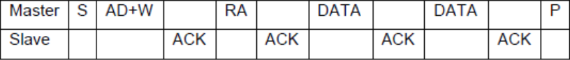
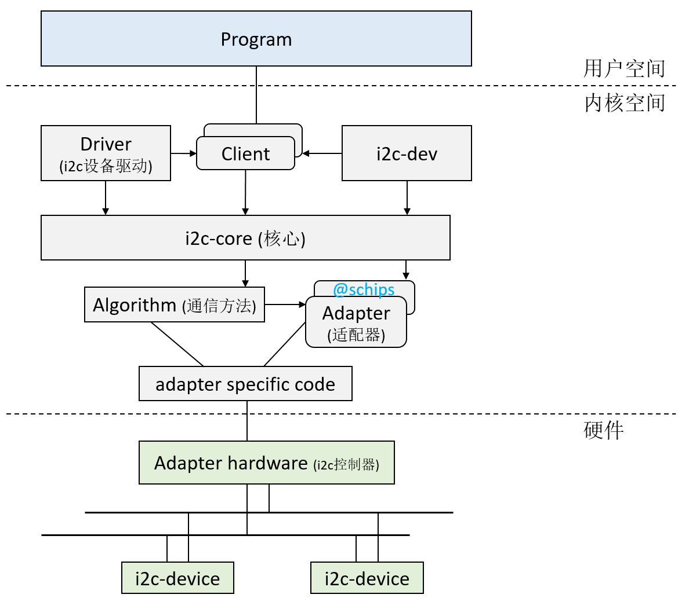

I2C子系统¶
I2C协议¶
I2C总线主要用于短距离、低速的芯片之间的通信。它有两根信号线，数据线SDA用于收发数据，时钟线SCL用于时钟同步。将芯片与总线对应的线相连即可通信。
I2C物理总线示意图如下所示：

I2C支持主从模式，一个主设备、多个从设备，各设备地址独立。主设备负责调度总线，决定某个事件和其中一个从设备通信，其他从设备要想通信只能等待。当SCL与SDA同为高电平时，为空闲态。
主机在发送起始信号后，必须先发送一个字节(8bit)的数据，该数据的前7位表示从机地址，最后一位表示字节的传送方向。总线上所有的从机都会收到该数据，然后与自己的地址进行比较，如果符合就返回一个ACK信号，再根据数据传送方向将自己定位为发送器或者接收器。
通信特征：
- 串行：只有一根数据线
- 同步：主从设备在同一个时钟频率下工作
- 半双工：只能单向通信，不能同时收发数据
- 非差分：因为I2C通信速率不高，而且通信双方距离很近，一般是板级通信，所以使用电平信号通信
- 低速率：传输的数据量不大，本身通信速率很低
I2C的通信过程：
- 开始信号（S）：SDA线从高电平到低电平跳变，同时SCL线保持高电平。
- 发送地址和读/写位：主设备通过SDA线发送一个7位设备地址，后面跟着一个读/写位。
- 响应信号(ACK)：每一次传输必须伴有一个响应信号，在SCL为高时，通过拉低SDA并保持低来实现。如果从设备忙，它可以使SCL保持在低电平，这会强制使主设备进入等待状态。当从设备空闲后，并且释放时钟线，原来的数据传输才会继续。
- 数据传输：SCL为低电平时，SDA可以变化高低电平来传输数据。
- 数据读取：SCL为高电平时，读取一位数据，SDA不允许变化。
- 停止信号(P)：数据传输结束时，SDA线从低电平到高电平的跳变，同时SCL线保持高电平，表示通信结束。

连续字节的写入如下图所示：

设备树描述¶
i2c0: i2c@fdd40000 {
compatible = "rockchip,rk3568-i2c", "rockchip,rk3399-i2c";
reg = <0x0 0xfdd40000 0x0 0x1000>;
interrupts = <GIC_SPI 46 IRQ_TYPE_LEVEL_HIGH>;
clocks = <&pmucru CLK_I2C0>, <&pmucru PCLK_I2C0>;
clock-names = "i2c", "pclk";
pinctrl-0 = <&i2c0_xfer>;
pinctrl-names = "default";
#address-cells = <1>;
#size-cells = <0>;
status = "disabled";
};
数据结构¶

- I2C核心：管理I2C驱动和I2C设备的匹配、删除
- I2C设备：I2C硬件设备的抽象
- I2C驱动：I2C设备的驱动程序
- I2C适配器：I2C控制器，用于驱动和设备之间的通信
I2C总线驱动¶
struct i2c_adapter用于描述一个特定的I2C总线控制器：
struct i2c_adapter {
struct module *owner;
unsigned int class; /* classes to allow probing for */
const struct i2c_algorithm *algo; /* the algorithm to access the bus */
void *algo_data;
/* data fields that are valid for all devices */
const struct i2c_lock_operations *lock_ops;
struct rt_mutex bus_lock;
struct rt_mutex mux_lock;
int timeout; /* in jiffies */
int retries;
struct device dev; /* the adapter device */
unsigned long locked_flags; /* owned by the I2C core */
#define I2C_ALF_IS_SUSPENDED 0
#define I2C_ALF_SUSPEND_REPORTED 1
int nr;
char name[48];
struct completion dev_released;
struct mutex userspace_clients_lock;
struct list_head userspace_clients;
struct i2c_bus_recovery_info *bus_recovery_info;
const struct i2c_adapter_quirks *quirks;
struct irq_domain *host_notify_domain;
struct regulator *bus_regulator;
};
struct i2c_adapter中最重要的成员——struct i2c_algorithm，它规定了I2C控制器与I2C设备之间通信的算法，而MASTER_XFER()函数，用来规定如何将数据发送到I2C设备：
struct i2c_algorithm {
/*
* If an adapter algorithm can't do I2C-level access, set master_xfer
* to NULL. If an adapter algorithm can do SMBus access, set
* smbus_xfer. If set to NULL, the SMBus protocol is simulated
* using common I2C messages.
*
* master_xfer should return the number of messages successfully
* processed, or a negative value on error
*/
int (*master_xfer)(struct i2c_adapter *adap, struct i2c_msg *msgs,
int num);
int (*master_xfer_atomic)(struct i2c_adapter *adap,
struct i2c_msg *msgs, int num);
int (*smbus_xfer)(struct i2c_adapter *adap, u16 addr,
unsigned short flags, char read_write,
u8 command, int size, union i2c_smbus_data *data);
int (*smbus_xfer_atomic)(struct i2c_adapter *adap, u16 addr,
unsigned short flags, char read_write,
u8 command, int size, union i2c_smbus_data *data);
/* To determine what the adapter supports */
u32 (*functionality)(struct i2c_adapter *adap);
#if IS_ENABLED(CONFIG_I2C_SLAVE)
int (*reg_slave)(struct i2c_client *client);
int (*unreg_slave)(struct i2c_client *client);
#endif
};
master_xfer：作为主设备时的发送函数
smbus_xfer：实现SMBus协议的发送函数
struct i2c_algorithm中的通信函数以struct i2c_msg为基本单位：
struct i2c_msg {
__u16 addr;
__u16 flags;
#define I2C_M_RD 0x0001 /* guaranteed to be 0x0001! */
#define I2C_M_TEN 0x0010 /* use only if I2C_FUNC_10BIT_ADDR */
#define I2C_M_DMA_SAFE 0x0200 /* use only in kernel space */
#define I2C_M_RECV_LEN 0x0400 /* use only if I2C_FUNC_SMBUS_READ_BLOCK_DATA */
#define I2C_M_NO_RD_ACK 0x0800 /* use only if I2C_FUNC_PROTOCOL_MANGLING */
#define I2C_M_IGNORE_NAK 0x1000 /* use only if I2C_FUNC_PROTOCOL_MANGLING */
#define I2C_M_REV_DIR_ADDR 0x2000 /* use only if I2C_FUNC_PROTOCOL_MANGLING */
#define I2C_M_NOSTART 0x4000 /* use only if I2C_FUNC_NOSTART */
#define I2C_M_STOP 0x8000 /* use only if I2C_FUNC_PROTOCOL_MANGLING */
__u16 len;
__u8 *buf;
};
addr：从设备地址
flags：标志位
len：传输数据的长度
buf：传输数据缓冲区
I2C设备驱动¶
struct i2c_client表示挂载到I2C总线上的设备，是具体硬件设备的抽象：
struct i2c_client {
unsigned short flags; /* div., see below */
unsigned short addr; /* chip address - NOTE: 7bit */
char name[I2C_NAME_SIZE];
struct i2c_adapter *adapter; /* the adapter we sit on */
struct device dev; /* the device structure */
int init_irq; /* irq set at initialization */
int irq; /* irq issued by device */
struct list_head detected;
#if IS_ENABLED(CONFIG_I2C_SLAVE)
i2c_slave_cb_t slave_cb; /* callback for slave mode */
#endif
void *devres_group_id; /* ID of probe devres group */
};
struct i2c_driver表示I2C设备所对应的驱动程序：
struct i2c_driver {
unsigned int class;
/* Standard driver model interfaces */
int (*probe)(struct i2c_client *client, const struct i2c_device_id *id);
int (*remove)(struct i2c_client *client);
/* New driver model interface to aid the seamless removal of the
* current probe()'s, more commonly unused than used second parameter.
*/
int (*probe_new)(struct i2c_client *client);
/* driver model interfaces that don't relate to enumeration */
void (*shutdown)(struct i2c_client *client);
/* Alert callback, for example for the SMBus alert protocol.
* The format and meaning of the data value depends on the protocol.
* For the SMBus alert protocol, there is a single bit of data passed
* as the alert response's low bit ("event flag").
* For the SMBus Host Notify protocol, the data corresponds to the
* 16-bit payload data reported by the slave device acting as master.
*/
void (*alert)(struct i2c_client *client, enum i2c_alert_protocol protocol,
unsigned int data);
/* a ioctl like command that can be used to perform specific functions
* with the device.
*/
int (*command)(struct i2c_client *client, unsigned int cmd, void *arg);
struct device_driver driver;
const struct i2c_device_id *id_table;
/* Device detection callback for automatic device creation */
int (*detect)(struct i2c_client *client, struct i2c_board_info *info);
const unsigned short *address_list;
struct list_head clients;
};
在平台设备驱动一章中我们描述了平台总线的概念，I2C总线有类似的功能，用来管理I2C设备和I2C驱动的匹配和删除操作：
/*drivers/i2c/i2c-core.c*/
struct bus_type i2c_bus_type = {
.name = "i2c",
.match = i2c_device_match,
.probe = i2c_device_probe,
.remove = i2c_device_remove,
.shutdown = i2c_device_shutdown,
};
多个设备可以挂在同一个I2C总线上，I2C总线驱动由芯片厂商提供。
I2C函数接口¶
向内核注册/注销一个i2c_adapter：
注册/注销一个I2C驱动：
传输数据：
使用i2c tools¶
i2c tools是一个命令行工具，可以用来操作I2C设备。输入sudo apt install i2c-tools安装。
- i2cdetect：扫描I2C总线上的设备
Usage: i2cdetect [-y] [-a] [-q|-r] I2CBUS [FIRST LAST]
i2cdetect -F I2CBUS
i2cdetect -l
I2CBUS is an integer or an I2C bus name
If provided, FIRST and LAST limit the probing range.
y:关闭交互式，不会显示警告信息
a:扫描总线上所有设备
q:使用SMBus的"quick write"命令进行检测，不建议使用
r:使用SMBus的"receive byte"命令进行检测，不建议使用
i2cbus:指定查询某个总线编号
first、last：扫描的地址范围
- i2cset：向I2C设备某个寄存器写入值
Usage: i2cset [-f] [-y] [-m MASK] [-r] [-a] I2CBUS CHIP-ADDRESS DATA-ADDRESS [VALUE] ... [MODE]
I2CBUS is an integer or an I2C bus name
ADDRESS is an integer (0x03 - 0x77, or 0x00 - 0x7f if -a is given)
MODE is one of:
c (byte, no value)
b (byte data, default)
w (word data)
i (I2C block data)
s (SMBus block data)
Append p for SMBus PEC
f:强制访问
y:指令执行自动yes，否则会提示确认执行Continue? [Y/n] Y，不加参数y会有很多执行提示，可以帮助判断
r:写入后立即回读寄存器的值，并将结果与写入的值进行比较
i2cbus：总线编号
chip-address:i2c设备地址
data-address:i2c寄存器地址
value 要写入的值
mode：指定读取的大小，b字节，w字，s是SMBus块，i是i2c块
- i2cget：从I2C设备某个寄存器读取值
Usage: i2cget [-f] [-y] [-a] I2CBUS CHIP-ADDRESS [DATA-ADDRESS [MODE]]
I2CBUS is an integer or an I2C bus name
ADDRESS is an integer (0x03 - 0x77, or 0x00 - 0x7f if -a is given)
MODE is one of:
b (read byte data, default)
w (read word data)
c (write byte/read byte)
Append p for SMBus PEC
f:强制访问
y:关闭交互模式，不会提示警告信息
i2cbus:总线编号
chip-address:i2c设备地址
data-address:i2c寄存器地址
mode:指定读取的大小，b字节，w字，s是SMBus块，i是i2c块
- i2cdump：读取某个I2C设备所有寄存器的值
Usage: i2cdump [-f] [-y] [-r first-last] [-a] I2CBUS ADDRESS [MODE [BANK [BANKREG]]]
I2CBUS is an integer or an I2C bus name
ADDRESS is an integer (0x03 - 0x77, or 0x00 - 0x7f if -a is given)
MODE is one of:
b (byte, default)
w (word)
W (word on even register addresses)
s (SMBus block)
i (I2C block)
c (consecutive byte)
Append p for SMBus PEC
r:指定寄存器范围，只能扫描从 first 到 last 区域
f:强制访问设备
y:关闭人机交互模式
i2cbus:总线编号
address:指定设备地址
mode:指定读取的大小，b字节，w字，s是SMBus块，i是i2c块
一般寄存器都是8位地址的，i2cdump、i2cget、i2cset也是设置读取8位的地址，如果一次超过8位，需要用i2ctransfer。
- i2ctransfer：一次性读写多个字节
Usage: i2ctransfer [-f] [-y] [-v] [-V] [-a] I2CBUS DESC [DATA] [DESC [DATA]]...
I2CBUS is an integer or an I2C bus name
DESC describes the transfer in the form: {r|w}LENGTH[@address]
1) read/write-flag 2) LENGTH (range 0-65535) 3) I2C address (use last one if omitted)
DATA are LENGTH bytes for a write message. They can be shortened by a suffix:
= (keep value constant until LENGTH)
+ (increase value by 1 until LENGTH)
- (decrease value by 1 until LENGTH)
p (use pseudo random generator until LENGTH with value as seed)
简单示例¶
#include <linux/version.h>
#include <linux/module.h>
#include <linux/init.h>
#include <linux/kernel.h>
#include <linux/slab.h>
#include <linux/fs.h>
#include <linux/errno.h>
#include <linux/cdev.h>
#include <linux/device.h>
#include <linux/mutex.h>
#include <linux/i2c.h>
#include <linux/delay.h>
#include <asm/uaccess.h>
/*
* The structure to represent 'eep_dev' devices.
* data - data buffer;
* buffer_size - size of the data buffer;
* block_size - maximum number of bytes that can be read or written
* in one call;
* eep_mutex - a mutex to protect the fields of this structure;
* cdev - character device structure.
*/
struct eep_dev {
unsigned char *data;
struct i2c_client *client;
struct mutex eep_mutex;
int current_pointer;
struct cdev cdev;
};
#define EEP_DEVICE_NAME "packt-mem"
#define EEP_PAGE_SIZE 128
#define EEP_SIZE 1024*64 /* 24LC512 is 64KB sized */
static unsigned int eep_major = 0;
static unsigned int minor = 0;
static struct class *eep_class = NULL;
int eep_open(struct inode *inode, struct file *filp)
{
struct eep_dev *dev = NULL;
dev = container_of(inode->i_cdev, struct eep_dev, cdev);
if (dev == NULL){
pr_err("Container_of did not found any valid data\n");
return -ENODEV; /* No such device */
}
dev->current_pointer = 0;
/* store a pointer to struct eep_dev here for other methods */
filp->private_data = dev;
if (inode->i_cdev != &dev->cdev){
pr_err("Device open: internal error\n");
return -ENODEV; /* No such device */
}
dev->data = (unsigned char*)kzalloc(EEP_SIZE, GFP_KERNEL);
if (dev->data == NULL){
pr_err("Error allocating memory\n");
return -ENOMEM;
}
return 0;
}
/*
* Release is called when device node is closed
*/
int eep_release(struct inode *inode, struct file *filp)
{
struct eep_dev *dev = filp->private_data;
if (dev->data != NULL){
kfree(dev->data);
dev->data = NULL ;
}
dev->current_pointer = 0;
return 0;
}
ssize_t eep_read(struct file *filp, char __user *buf,
size_t count, loff_t *f_pos)
{
int _reg_addr;
u8 reg_addr[2];
struct i2c_msg msg[2];
struct eep_dev *dev = filp->private_data;
ssize_t retval = 0;
if (mutex_lock_killable(&dev->eep_mutex))
return -EINTR;
if (*f_pos >= EEP_SIZE) /* EOF */
goto end_read;
if(dev->current_pointer >= EEP_SIZE){
retval = 0; /* EOF */
goto end_read;
}
if (dev->current_pointer + count > EEP_SIZE)
count = EEP_SIZE - dev->current_pointer;
if (count > EEP_SIZE)
count = EEP_SIZE;
_reg_addr = dev->current_pointer;
reg_addr[0] = (u8)(_reg_addr >> 8);
reg_addr[1] = (u8)(_reg_addr & 0xFF);
msg[0].addr = dev->client->addr;
msg[0].flags = 0; /* Write */
msg[0].len = 2; /* Address is 2byte coded */
msg[0].buf = reg_addr;
msg[1].addr = dev->client->addr;
msg[1].flags = I2C_M_RD; /* We need to read */
msg[1].len = count;
msg[1].buf = dev->data;
if (i2c_transfer(dev->client->adapter, msg, 2) < 0)
pr_err("ee24lc512: i2c_transfer failed\n");
if(copy_to_user(buf, dev->data, count) != 0){
retval = -EIO;
goto end_read;
}
retval = count;
dev->current_pointer += count ;
end_read:
mutex_unlock(&dev->eep_mutex);
return retval;
}
int transacWrite(struct eep_dev *dev,
int _reg_addr, unsigned char *data,
int offset, unsigned int len)
{
unsigned char tmp[len + 2];
struct i2c_msg msg[1];
tmp[0] = (u8)(_reg_addr >> 8);
tmp[1] = (u8)(_reg_addr & 0xFF);
memcpy (tmp + 2, &(data[offset]), len);
msg[0].addr = dev->client->addr;
msg[0].flags = 0; /* Write */
msg[0].len = len + 2; /* Address is 2 bytes coded */
msg[0].buf = tmp;
if (i2c_transfer(dev->client->adapter, msg, 1) < 0){
pr_err("ee24lc512: i2c_transfer failed\n");
return -1;
}
return len;
}
ssize_t eep_write(struct file *filp, const char __user *buf,
size_t count, loff_t *f_pos)
{
int _reg_addr, offset, remain_in_page, nb_page, last_remain, i;
struct eep_dev *dev = filp->private_data;
ssize_t retval = 0;
if (mutex_lock_killable(&dev->eep_mutex))
return -EINTR;
if(dev->current_pointer >= EEP_SIZE){
retval = -EINVAL;
goto end_write;
}
if (*f_pos >= EEP_SIZE) {
/* Writing beyond the end of the buffer is not allowed. */
retval = -EINVAL;
goto end_write;
}
if (dev->current_pointer + count >= EEP_SIZE)
count = EEP_SIZE - dev->current_pointer;
if (count > EEP_SIZE)
count = EEP_SIZE;
if (copy_from_user(dev->data, buf, count) != 0){
retval = -EFAULT;
goto end_write;
}
_reg_addr = dev->current_pointer;
offset = 0;
remain_in_page = (EEP_PAGE_SIZE - (dev->current_pointer % EEP_PAGE_SIZE)) % EEP_PAGE_SIZE;
nb_page = (count - remain_in_page) / EEP_PAGE_SIZE;
last_remain = (count - remain_in_page) % EEP_PAGE_SIZE ;
if (remain_in_page > 0){
retval = transacWrite(dev, _reg_addr, dev->data, offset, remain_in_page);
if (retval < 0)
goto end_write;
offset += remain_in_page;
dev->current_pointer += remain_in_page;
_reg_addr += remain_in_page;
retval = offset;
mdelay(10);
}
if (nb_page < 1 && last_remain < 1)
goto end_write;
for (i=0; i < nb_page; i++){
retval = transacWrite(dev, _reg_addr, dev->data, offset, EEP_PAGE_SIZE);
if (retval < 0)
goto end_write;
offset += EEP_PAGE_SIZE;
_reg_addr += EEP_PAGE_SIZE;
dev->current_pointer += EEP_PAGE_SIZE;
retval = offset;
mdelay(10);
}
if (last_remain > 0){
retval = transacWrite(dev, _reg_addr, dev->data, offset, last_remain);
if (retval < 0)
goto end_write;
offset += last_remain;
_reg_addr += last_remain;
dev->current_pointer += last_remain;
retval = offset;
mdelay(10);
}
end_write:
mutex_unlock(&dev->eep_mutex);
return retval;
}
loff_t eep_llseek(struct file *filp, loff_t off, int whence)
{
struct eep_dev *dev = (struct eep_dev *)filp->private_data;
loff_t newpos = 0;
switch(whence) {
case 0: /* SEEK_SET */
newpos = off;
break;
case 1: /* SEEK_CUR */
newpos = filp->f_pos + off;
break;
case 2: /* SEEK_END - Not supported */
return -EINVAL;
default: /* can't happen */
return -EINVAL;
}
if (newpos < 0 || EEP_SIZE)
return -EINVAL;
dev->current_pointer = newpos;
filp->f_pos = newpos;
return newpos;
}
struct file_operations eep_fops = {
.owner = THIS_MODULE,
.read = eep_read,
.write = eep_write,
.open = eep_open,
.release = eep_release,
.llseek = eep_llseek,
};
static const struct of_device_id ee24lc512_ids[] = {
{ .compatible = "microchip,ee24lc512", },
{ /* sentinel */ }
};
static int ee24lc512_probe(struct i2c_client *client,
const struct i2c_device_id *id)
{
unsigned char data[5];
u8 reg_addr[2];
struct i2c_msg msg[2];
int err = 0;
dev_t devno = 0;
struct eep_dev *eep_device = NULL;
struct device *device = NULL;
if (!i2c_check_functionality(client->adapter, I2C_FUNC_SMBUS_BYTE_DATA))
return -EIO;
/*
* We send a simple i2c transaction. If it fails,
* it meants there is no eeprom
*/
reg_addr[0] = 0x00;
reg_addr[1] = 0x00;
msg[0].addr = client->addr;
msg[0].flags = 0; /* Write */
msg[0].len = 2; /* Address is 2byte coded */
msg[0].buf = reg_addr;
msg[1].addr = client->addr;
msg[1].flags = I2C_M_RD; /* We need to read */
msg[1].len = 5; //count;
msg[1].buf = data;
if (i2c_transfer(client->adapter, msg, 2) < 0)
pr_err("ee24lc512: i2c_transfer failed\n");
/* Get a range of minor numbers (starting with 0) to work with */
err = alloc_chrdev_region(&devno, 0, 1, EEP_DEVICE_NAME);
if (err < 0) {
pr_err("alloc_chrdev_region() failed for %s\n", EEP_DEVICE_NAME);
return err;
}
eep_major = MAJOR(devno);
/* Create device class */
eep_class = class_create(THIS_MODULE, EEP_DEVICE_NAME);
if (IS_ERR(eep_class)) {
err = PTR_ERR(eep_class);
goto fail;
}
eep_device = (struct eep_dev *)kzalloc(sizeof(struct eep_dev), GFP_KERNEL);
if (eep_device == NULL) {
err = -ENOMEM;
goto fail;
}
/* Memory is to be allocated when the device is opened the first time */
eep_device->data = NULL;
eep_device->client = client;
eep_device->current_pointer = 0;
mutex_init(&eep_device->eep_mutex);
cdev_init(&eep_device->cdev, &eep_fops);
eep_device->cdev.owner = THIS_MODULE;
err = cdev_add(&eep_device->cdev, devno, 1);
if (err){
pr_err("Error while trying to add %s", EEP_DEVICE_NAME);
goto fail;
}
device = device_create(eep_class, NULL, /* no parent device */
devno, NULL, /* no additional data */
EEP_DEVICE_NAME);
if (IS_ERR(device)) {
err = PTR_ERR(device);
pr_err("failure while trying to create %s device", EEP_DEVICE_NAME);
cdev_del(&eep_device->cdev);
goto fail;
}
i2c_set_clientdata(client, eep_device);
return 0; /* success */
fail:
if(eep_class != NULL){
device_destroy(eep_class, MKDEV(eep_major, minor));
class_destroy(eep_class);
}
if (eep_device != NULL)
kfree(eep_device);
return err;
}
static int ee24lc512_remove(struct i2c_client *client)
{
struct eep_dev *eep_device = i2c_get_clientdata(client);
device_destroy(eep_class, MKDEV(eep_major, 0));
kfree(eep_device->data);
mutex_destroy(&eep_device->eep_mutex);
kfree(eep_device);
class_destroy(eep_class);
unregister_chrdev_region(MKDEV(eep_major, 0), 1);
return 0;
}
static const struct i2c_device_id ee24lc512_id[] = {
{"ee24lc512", 0},
{},
};
MODULE_DEVICE_TABLE(i2c, ee24lc512_id);
static struct i2c_driver ee24lc512_i2c_driver = {
.driver = {
.owner = THIS_MODULE,
.name = "ee24lc512",
.of_match_table = of_match_ptr(ee24lc512_ids),
},
.probe = ee24lc512_probe,
.remove = ee24lc512_remove,
.id_table = ee24lc512_id,
};
module_i2c_driver(ee24lc512_i2c_driver);
MODULE_AUTHOR("John Madieu <john.madieu@gmail.com>");
MODULE_LICENSE("GPL");